Released: November 7, 2012
Next Release: November 15, 2012
Retail Gasoline Prices Expected to Decline in the Coming Weeks
The national average retail price for a gallon of regular gasoline has fallen 36 cents per gallon over the last four weeks to hit $3.49 per gallon on November 5, the lowest price since mid-July. The decrease in retail gasoline prices has been a result of easing crude oil prices, narrowing gasoline crack spreads (the difference between wholesale gasoline and crude oil prices), and the switch in production from higher-cost summer-grade gasoline to lower-cost winter-grade gasoline. In its November Short-Term Energy Outlook (STEO), the U.S. Energy Information Administration (EIA) forecasts a continuing decline in retail gasoline prices through the end of this year (Figure 1). However, the effects of Hurricane Sandy on petroleum supply chains in the Northeast have added to the uncertainty of the forecast.
{kind=link}
One driver behind the recent decrease in gasoline prices has been a decrease in the price of crude oil. After reaching a third-quarter high of more than $117 per barrel on September 14, the spot price of Brent crude oil fell to average $112 per barrel for the month of October. EIA expects global oil markets to continue to loosen as projected global liquid fuels production outpaces consumption by 0.1 million barrels per day in the fourth quarter, leading to global inventory builds. Much of the effect of this easing is already reflected in prices. EIA expects Brent spot prices to remain relatively flat through the end of the fourth quarter, averaging about $109 per barrel in both November and December.
In addition to lower crude oil prices, gasoline crack spreads have contracted significantly over the past month, helping to lower prices at the pump. In September, the differential between the refiners' wholesale price for motor gasoline and Brent hit a multiyear monthly average high of 54 cents per gallon, partially driven by the tight gasoline market on the West Coast (PADD 5) and refinery problems in Mexico and Venezuela. However, the switch in production from summer-grade gasoline to lower-cost winter-grade gasoline and an easing demand for refined products as consumption came off its third-quarter peak contributed to falling gasoline crack spreads. The crack spread fell 17 cents per gallon from September to an average of 37 cents per gallon in October. With crude oil prices expected to be relatively flat through the end of this year, a further decline in the crack spread is expected to be the main driver of lower retail gasoline prices. EIA expects the gasoline crack spread to average 18 cents per gallon in November and 15 cents per gallon in December. Because a significant portion of easing in the gasoline market is due to falling crack spreads on the West Coast, that region is expected to see the largest decrease in retail prices from their October levels, with prices projected to fall 56 cents per gallon to $3.68 per gallon in December.
The pace at which petroleum markets in the Northeast normalize in the wake of Hurricane Sandy injects additional uncertainty into this month's forecast. Price effects from the storm have been thus far fairly muted. Several regulatory waivers have been issued to ease supply constraints in the Northeast, helping mitigate some price pressures. However, the situation continues to develop and gasoline inventories in the Northeast are currently at relatively low levels; if supply disruptions linger longer than current expectations, it could push prices in the region higher. Currently, EIA is projecting prices on the East Coast (PADD 1) to average $3.43 per gallon in December, a decrease of 30 cents per gallon from October, which is slightly less than the 33-cent-per-gallon decline projected for the U.S. average price.
The Market Prices and Uncertainty Report that accompanies the November STEO provides a quantitative analysis of gasoline price uncertainty based on the price structure of futures and options traded for New York Harbor Reformulated Blendstock for Oxygenate Blending (RBOB).
Gasoline and diesel fuel prices continue to drop
The U.S. average retail price of regular gasoline decreased eight cents last week to $3.49 per gallon, seven cents per gallon higher than last year at this time. The average U.S. retail price has decreased 36 cents per gallon over the last four weeks. Prices again fell in all regions of the nation, with the largest decrease on the West Coast, where the average price is down 15 cents to $3.90 per gallon. The last time the West Coast price was below $4 per gallon was the week of August 13, 2012. The Midwest and Gulf Coast prices were both down seven cents, to $3.32 per gallon and $3.27 per gallon, respectively. The East Coast price is now $3.53 per gallon, a decrease of six cents from last week, and the Rocky Mountain price decreased four cents to $3.61 per gallon.
The national average diesel fuel price decreased two cents to $4.01 per gallon, 12 cents per gallon higher than last year at this time. The diesel price fell in all regions of the Nation for the third consecutive week, with the largest decrease coming in the Rocky Mountain region, where the price fell four cents to $4.16 per gallon. The West Coast price is down three cents to $4.15 per gallon. East of the Rockies, the Midwest and Gulf Coast are now $3.96 per gallon and $3.92 per gallon, respectively, a decrease of 2.5 cents from last week in both regions. On the East Coast, the price fell a fraction of a penny to $4.03 per gallon.
Propane inventories dip further
Total U.S. inventories of propane fell 0.3 million barrels last week to end at 73.6 million barrels, 13.4 million barrels (22 percent) higher than a year ago. The majority of the decline occurred in the East Coast region, which fell by 0.3 million barrels. Elsewhere, Rocky Mountain/West Coast stocks were down 0.1 million barrels, Gulf Coast stocks dipped slightly and Midwest regional inventories showed a slight build. Propylene non-fuel-use inventories represented 5.7 percent of total propane inventories.
Residential heating oil prices decrease, propane prices increase
Residential heating oil prices decreased during the period ending November 5, 2012. The average residential heating oil price fell by a penny last week to $3.98 per gallon, 11 cents per gallon higher than the same time last year. Wholesale heating oil prices decreased by nearly 12 cents per gallon last week to land at $3.11 per gallon, nine cents per gallon less than last year at this time.
The average residential propane price rose two cents last week to $2.40 per gallon, 41 cents per gallon lower than the same period last year. Wholesale propane prices decreased by nearly two cents to $1.00 per gallon for the week ending November 5, 2012, 47 cents per gallon lower than the November 7, 2011 price.
| 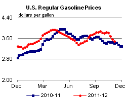 | 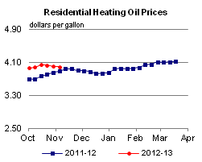 | ||||||
| 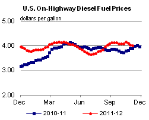 | 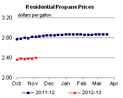 | ||||||
| Retail Data | Change From Last | Retail Data | Change From Last | ||||
| 11/05/12 | Week | Year | 11/05/12 | Week | Year | ||
| Gasoline | 3.492 | Heating Oil | 3.983 | ||||
| Diesel Fuel | 4.010 | Propane | 2.404 | ||||
| 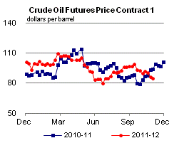 | 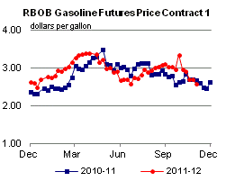 | ||||||||||||||||||||||||||
|
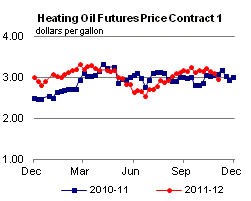 | ||||||||||||||||||||||||||
| *Note: Crude Oil Price in Dollars per Barrel. | |||||||||||||||||||||||||||
| 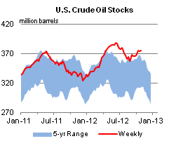 | 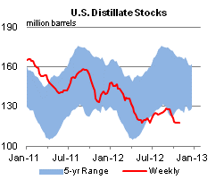 | ||||||
| 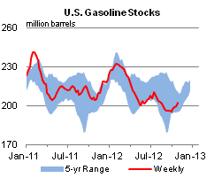 | 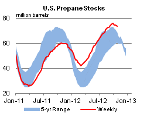 | ||||||
| Stocks Data | Change From Last | Stocks Data | Change From Last | ||||
| 11/02/12 | Week | Year | 11/02/12 | Week | Year | ||
| Crude Oil | 374.8 | Distillate | 118.1 | ||||
| Gasoline | 202.4 | Propane | 73.620 | ||||